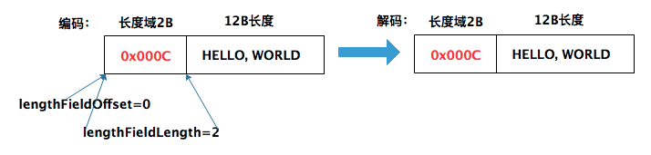
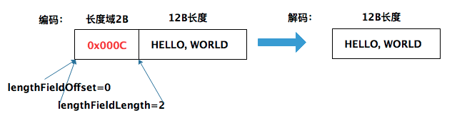
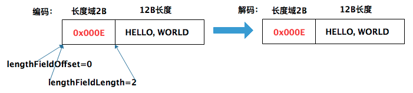
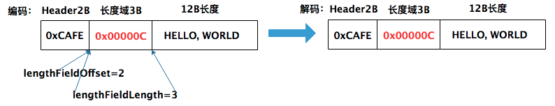

透彻理解Java网络编程（十三）——Netty原理：Encoder和Decoder
Netty既然是一个网络通信框架，就必然涉及编解码技术：
- Netty从底层Java通道读到二进制数据后，传入Netty通道的流水线，随后开始入站处理，在入站处理过程中，需要将二进制类型数据解码成Java POJO对象。这个解码过程，可以通过Netty的Decoder解码器去完成；
- 出站处理过程中，业务处理后的结果（出站数据），需要从某个Java POJO对象，编码为最终的二进制数据，然后通过底层Java通道发送到对端。这个编码过程，可以通过Netty的Encoder编码器去完成。
本章，我就对Netty中的Encoder编码器和Decoder解码器进行讲解。
一、粘包/拆包
在讲解编码/解码之前，我需要先讲解下粘包/拆包，事实上，我在其它专栏中已经对这个问题进行过多次讲解，在本Netty专栏中，我再带大家来回顾下。
1.1 产生原因
我们使用Netty一般都是直接基于TCP协议开发，而直接基于TCP协议编程就可能出现拆包/粘包问题。TCP 传输协议是面向流的，没有数据包界限。客户端向服务端发送数据时，可能将一个完整的报文拆分成多个小报文进行发送，也可能将多个报文合并成一个大的报文进行发送。
在网络通信的过程中，每次可以发送的数据包大小是受多种因素限制的，如 MTU 传输单元大小、MSS 最大分段大小、滑动窗口等：
- 如果一次传输的网络包数据大小超过了MTU传输单元大小，那么数据可能会拆分为多个数据包发送出去；
- 如果每次请求的网络包数据都很小，TCP 会采用的 Nagle 算法进行优化，本质就是先缓存再批量发送。
Linux 在默认情况下是开启 Nagle 算法的，在大量小数据包的场景下可以有效地降低网络开销。可以通过 Linux 提供的
TCP_NODELAY参数禁用 Nagle 算法。
我们再通过一个示例理解下拆包和粘包：
上图中，演示了五种拆包/粘包的情况：
- 服务端恰巧读到了两个完整的数据包 A 和 B，没有出现拆包/粘包问题；
- 服务端接收到 A 和 B 粘在一起的数据包，服务端需要解析出 A 和 B；
- 服务端收到完整的 A 和 B 的一部分数据包 B-1，服务端需要解析出完整的 A，并等待读取完整的 B 数据包；
- 服务端接收到 A 的一部分数据包 A-1，此时需要等待接收到完整的 A 数据包；
- 数据包 A 较大，服务端需要多次才可以接收完数据包 A。
由于拆包/粘包问题的存在，接收方很难界定数据包的边界在哪里。所以需要提供一种机制来识别数据包的界限，这也是解决拆包/粘包的唯一方法：定义应用层的通信协议。
1.2 解决方案
下面我们一起看下主流协议的解决方案。
定长消息法
每个数据报文都需要一个固定长度。当接收方累计读取到固定长度的报文后，就认为已经获得一个完整的消息。当发送方的数据小于固定长度时，则需要空位补齐。
举个例子来理解，假设我们定义的消息长度为 4 字节，然后发送方发送如下所示的5条数据：
+----+------+------+---+----+
| AB | CDEF | GHIJ | K | LM |
+----+------+------+---+----+
那么对于接收方来说，会解析成：
+------+------+------+------+
| ABCD | EFGH | IJKL | M000 |
+------+------+------+------+
定长消息法，使用非常简单，但是缺点也很明显：无法很好的确定固定长度值，长度太大会造成字节浪费，长度太小会导致程序变更，所以实际运用中，只有一些比较老的系统（特别是金融行业的系统）会采用该方法，目前不建议使用。
分隔符法
分隔符法，就是在每次发送的完整报文尾部加上特定分隔符，接收方就可以根据分隔符对数据包进行拆分。
举个例子来理解，假设我们定义的分隔符为\n，然后发送方发送如下所示的5条数据：
+-------------------------+
| AB\nCDEF\nGHIJ\nK\nLM\n |
+-------------------------+
那么，接收方就可以根据分隔符得到 AB、CDEF、GHIJ、K、LM 五条原始报文。
变长消息法
变长消息法，是目前项目开发中最常用的一种方法，比如Kafka就采用了这种方法自定义消息协议。变长消息法的核心思想是：消息头总长度固定，里面存放变长消息体的总长度。
消息头中不仅可以存放消息体长度，还可以自定义扩展字段，比如版本号、消息类型、魔数等等。
举个例子来理解，假设我们定义消息头总长度的4字节，然后通过一个int值记录消息体的长度，消息体实际是二进制的字节数据：
+-----+-------+-------+----+-----+
| 2AB | 4CDEF | 4GHIJ | 1K | 2LM |
+-----+-------+-------+----+-----+
那么，接收方在解析数据时，首先读取4字节的消息头，得到消息体的长度Len，然后读取长度为 Len 的字节数据即为消息体。
Netty提供了很多原生的编码器和解码器，可以帮助我们方便的解决粘包和拆包问题，后面的小节中，我将通过一个示例详细讲解。
二、Encoder编码器
在Netty的业务处理完成后，业务处理的结果往往是某个Java POJO对象，需要编码成最终的ByteBuf二进制类型。通过流水线写入到底层的Java通道。 Netty 常用的Encoder编码器类型有两类：
- MessageToByteEncoder：对象编码成字节流；
- MessageToMessageEncoder：一种消息类型编码成另外一种消息类型。
编码器是一个Outbound出站处理器，对应接口为ChannelOutboundHandler：

2.1 MessageToByteEncoder
MessageToByteEncoder的功能是将一个Java POJO对象编码成一个ByteBuf数据包。它是一个抽象类，仅仅实现了编码的基础流程，由子类负责实现具体的encode编码方法：
// MessageToByteEncoder.java
public void write(ChannelHandlerContext ctx, Object msg, ChannelPromise promise) throws Exception {
ByteBuf buf = null;
try {
if (acceptOutboundMessage(msg)) {
I cast = (I) msg;
buf = allocateBuffer(ctx, cast, preferDirect);
try {
// 抽象方法，由子类实现
encode(ctx, cast, buf);
} finally {
ReferenceCountUtil.release(cast);
}
if (buf.isReadable()) {
ctx.write(buf, promise);
} else {
buf.release();
ctx.write(Unpooled.EMPTY_BUFFER, promise);
}
buf = null;
} else {
ctx.write(msg, promise);
}
} catch (EncoderException e) {
throw e;
} catch (Throwable e) {
throw new EncoderException(e);
} finally {
if (buf != null) {
buf.release();
}
}
}
从上述代码可以看出，MessageToByteEncoder进行编码的流程分为以下几个步骤：
acceptOutboundMessage判断是否有匹配的消息类型，如果有匹配则执行编码流程，没有则传递给下一个 ChannelOutboundHandler；- 分配 ByteBuf 资源，默认使用堆外内存；
- 调用子类的
encode方法完成数据编码，消息一旦被成功编码，会通过调用 ReferenceCountUtil.release(cast) 自动释放； - 如果 ByteBuf 可读，说明已经成功编码得到数据，然后写入 ChannelHandlerContext 交给下一个节点；如果 ByteBuf 不可读，则释放 ByteBuf 资源，向下传递空的 ByteBuf 对象。
来看一个示例——StringToByteEncoder，对字符串类型的数据进行编码：
// StringToByteEncoder.java
public class StringToByteEncoder extends MessageToByteEncoder<String> {
@Override
protected void encode(ChannelHandlerContext channelHandlerContext,
String data, ByteBuf byteBuf) throws Exception {
byteBuf.writeBytes(data.getBytes());
}
}
编码完成后，基类MessageToByteEncoder会将输出的ByteBuf数据包发送到下一站。
2.2 MessageToMessageEncoder
MessageToMessageEncoder的功能是将某一种POJO对象编码成另外一种的POJO对象。它同样是一个抽象类，仅仅实现了编码的基础流程，由子类负责实现具体的encode编码方法：
// MessageToMessageEncoder.java
@Override
public void write(ChannelHandlerContext ctx, Object msg, ChannelPromise promise) throws Exception {
CodecOutputList out = null;
try {
if (acceptOutboundMessage(msg)) {
out = CodecOutputList.newInstance();
I cast = (I) msg;
try {
// 抽象方法，由子类实现
encode(ctx, cast, out);
} finally {
ReferenceCountUtil.release(cast);
}
if (out.isEmpty()) {
throw new EncoderException(
StringUtil.simpleClassName(this) + " must produce at least one message.");
}
} else {
ctx.write(msg, promise);
}
} catch (EncoderException e) {
throw e;
} catch (Throwable t) {
throw new EncoderException(t);
} finally {
//...
}
}
注意，子类在实现encode方法时，编码完成后，需要将编码后的结果对象加入到encode方法中的List入参中。下面是一个将String转换成Integer的Encoder编码器示例：
public class String2IntegerEncoder extends MessageToMessageEncoder<String> {
@Override
protected void encode(ChannelHandlerContext ctx, String s, List<Object> list) throws Exception {
char[] array = s.toCharArray();
for (char a : array) {
//48 是0的编码，57 是9 的编码
if (a >= 48 && a <= 57) {
list.add(new Integer(a));
}
}
}
}
}
三、Decoder解码器
解码器负责处理“入站数据”，将上一站Inbound入站处理器传过来的输入数据，进行解码，然后输出到下一站Inbound入站处理器。一个标准的Decoder解码器将输入类型为ByteBuf缓冲区的数据进行解码，输出一个一个的Java POJO对象。
Netty 常用的解码器类型有两类：
- ByteToMessageDecoder/ReplayingDecoder：将字节流解码为消息对象；
- MessageToMessageDecoder：将一种消息类型解码为另外一种消息类型。
解码器是一个Inbound入站处理器，对应接口为ChannelInboundHandler：
3.1 ByteToMessageDecoder
ByteToMessageDecoder是一个非常重要的解码器抽象类，实现了解码的基础逻辑和流程，它仅仅将子类的decode方法解码之后的Object结果，放入自己内部的结果列表List<Object>中，最终，父类会负责将List<Object>中的元素，一个个地传递给下一个站：
// ByteToMessageDecoder.java
public abstract class ByteToMessageDecoder extends ChannelInboundHandlerAdapter {
protected abstract void decode(ChannelHandlerContext ctx, ByteBuf in, List<Object> out)
throws Exception;
protected void decodeLast(ChannelHandlerContext ctx, ByteBuf in, List<Object> out)
throws Exception {
if (in.isReadable()) {
decodeRemovalReentryProtection(ctx, in, out);
}
}
}
上述的decode()方法， 是子类必须实现的抽象方法，该方法在调用时需要传入接收的数据 ByteBuf，以及用来添加编码后消息的 List。由于 TCP 粘包问题，ByteBuf 中可能包含多个有效报文，或者不够一个完整报文。Netty 会重复回调 decode() 方法，直到解码不出新的可以添加到List中的完整报文，或者 ByteBuf 没有更多可读取数据为止。
此外，ByteToMessageDecoder 还定义了 decodeLast() 方法。decodeLast 在 Channel 关闭后会被调用一次，主要用于处理 ByteBuf 最后剩余的字节数据。Netty 中 decodeLast 的默认实现只是简单调用了 decode() 方法，如果有特殊的业务需求，则可以通过重写 decodeLast() 方法扩展自定义逻辑。
来看一个示例——ByteToIntegerDecoder，将字节类型的数据编码成Integer：
// ByteToIntegerDecoder.java
public class ByteToIntegerDecoder extends ByteToMessageDecoder {
@Override
public void decode(ChannelHandlerContext ctx, ByteBuf in, List<Object> out) {
while (in.readableBytes() >= 4) {
int i = in.readInt();
Logger.info("解码出一个整数: " + i);
out.add(i);
}
}
}
ByteToMessageDecoder 还有一个抽象子类是 ReplayingDecoder。它封装了对缓冲区的管理，在读取缓冲区数据时，你无须再对字节长度进行检查。因为如果没有足够长度的字节数据，ReplayingDecoder 将终止解码操作。ReplayingDecoder 的性能相比直接使用 ByteToMessageDecoder 要慢，大部分情况下并不推荐使用。
3.2 MessageToMessageDecoder
MessageToMessageEncoder的功能是将某一种POJO对象解码成另外一种的POJO对象。它同样是一个抽象类，仅仅实现了解码的基础流程，由子类负责实现具体的decode编码方法：
// MessageToMessageDecoder.java
@Override
public void channelRead(ChannelHandlerContext ctx, Object msg) throws Exception {
CodecOutputList out = CodecOutputList.newInstance();
try {
if (acceptInboundMessage(msg)) {
I cast = (I) msg;
try {
// 抽象方法，子类实现
decode(ctx, cast, out);
} finally {
ReferenceCountUtil.release(cast);
}
} else {
out.add(msg);
}
} catch (DecoderException e) {
throw e;
} catch (Exception e) {
throw new DecoderException(e);
} finally {
try {
int size = out.size();
for (int i = 0; i < size; i++) {
ctx.fireChannelRead(out.getUnsafe(i));
}
} finally {
out.recycle();
}
}
}
我们来通过一个示例理解下，Integer2StringDecoder类用于将Integer类型的输入转化成String类型：
// Integer2StringDecoder.java
public class Integer2StringDecoder extends MessageToMessageDecoder<Integer> {
@Override
public void decode(ChannelHandlerContext ctx, Integer msg, List<Object> out) throws Exception {
out.add(String.valueOf(msg));
}
}
可以看到，子类在在继承MessageToMessageDecoder时，需要明确它的泛型实参。这个实参的作用就是指定入站消息Java POJO类型。
3.3 内置解码器
Netty提供了不少开箱即用的Decoder解码器，这些解码器基本覆盖了 TCP 拆包/粘包的通用解决方案。
FixedLengthFrameDecoder
特点：固定长度解码器，无论接收方一次获取多大的数据，都会严格按照 frameLength 进行解码，即当解码器累积读取到长度大小为 frameLength 的消息，就认为已经获取到了一个完整的消息。如果消息长度小于 frameLength，该解码器会一直等待后续数据包的到达，直至获得完整的消息。
// FixedLengthFrameDecoder.java
public class FixedLengthFrameDecoder extends ByteToMessageDecoder {
// 固定字节的长度
private final int frameLength;
public FixedLengthFrameDecoder(int frameLength) {
checkPositive(frameLength, "frameLength");
this.frameLength = frameLength;
}
}
下面，我们通过一个例子来感受一下。首先是Server端，我定义了两个ChannelHandler：FixedLengthFrameDecoder和EchoServerHandler，FixedLengthFrameDecoder负责按定长的方式解码字节流（构造函数传入frameLength = 10），然后将结果转发给下一站EchoServerHandler，EchoServerHandler只负责打印结果：
public class FixedLengthFrameDemo {
static class EchoServerHandler extends ChannelInboundHandlerAdapter {
@Override
public void channelRead(ChannelHandlerContext ctx, Object msg) throws Exception {
ByteBuf buf = (ByteBuf) msg;
System.out.println("received string: [" + buf.toString(Charset.forName("UTF-8")) + "]");
super.channelRead(ctx, msg);
}
}
public static void main(String[] args) {
EventLoopGroup mainGroup = new NioEventLoopGroup();
EventLoopGroup subGroup = new NioEventLoopGroup();
try {
ServerBootstrap serverBootstrap = new ServerBootstrap();
serverBootstrap.group(mainGroup, subGroup)
.channel(NioServerSocketChannel.class)
.option(ChannelOption.SO_BACKLOG, 1024)
.localAddress("127.0.0.1", 8080)
.childOption(ChannelOption.SO_KEEPALIVE, true)
.childOption(ChannelOption.TCP_NODELAY, true)
.childHandler(new ChannelInitializer<SocketChannel>() {
@Override
protected void initChannel(SocketChannel socketChannel) {
socketChannel.pipeline().addLast(new FixedLengthFrameDecoder(10));
socketChannel.pipeline().addLast(new EchoServerHandler());
}
});
ChannelFuture channelFuture = serverBootstrap.bind().sync();
System.out.println("Server已经启动......");
channelFuture.channel().closeFuture().sync();
} catch (Exception ex) {
ex.printStackTrace();
} finally {
mainGroup.shutdownGracefully();
subGroup.shutdownGracefully();
}
}
}
启动服务端后，我们通过telnet命令连接上去，执行以下命令：
Microsoft Telnet> send hello, Miss xiaoyu?
发送字符串 hello, Miss xiaoyu?
Microsoft Telnet> send How are you
发送字符串 How are you
Microsoft Telnet>
服务端收到的结果如下，可以看到，服务端是按10个字节的固定长度依次解析的：
received string: [hello, Mis]
received string: [s xiaoyu?H]
received string: [ow are you]
DelimiterBasedFrameDecoder
特点：特殊分隔符解码器，基于自定义的分隔符（比如回车/换行）作为数据包的边界分割符。 无论接收方一次获取多大的数据，都会严格按照分隔符进行解码。
// DelimiterBasedFrameDecoder.java
public DelimiterBasedFrameDecoder(int maxFrameLength, boolean stripDelimiter,
boolean failFast, ByteBuf... delimiters) {
if (isLineBased(delimiters) && !isSubclass()) {
lineBasedDecoder = new LineBasedFrameDecoder(maxFrameLength, stripDelimiter, failFast);
this.delimiters = null;
} else {
this.delimiters = new ByteBuf[delimiters.length];
for (int i = 0; i < delimiters.length; i ++) {
ByteBuf d = delimiters[i];
validateDelimiter(d);
this.delimiters[i] = d.slice(d.readerIndex(), d.readableBytes());
}
lineBasedDecoder = null;
}
this.maxFrameLength = maxFrameLength;
this.stripDelimiter = stripDelimiter;
this.failFast = failFast;
}
DelimiterBasedFrameDecoder的构造函数，有几个属性需要了解以下：
- delimiters：特殊分隔符，类型是 ByteBuf 数组，所以我们可以同时指定多个分隔符，但是最终会选择长度最短的分隔符进行消息拆分；
- maxFrameLength：报文最大字节长度，如果超过 maxLength 还没有检测到指定分隔符，会抛出
TooLongFrameException； - failFast：与 maxFrameLength 搭配使用，设置 failFast 可以控制抛出
TooLongFrameException的时机，如果 值为true，那么在超出 maxLength 会立即抛出 TooLongFrameException。如果值为false，会等到解码出一个完整的消息后再抛出 TooLongFrameException。默认为true； - stripDelimiter：解码后得到的消息是否去除分隔符，默认为true。
下面，我们通过一个例子来感受一下：
public class DelimiterBasedFrameDemo {
static class EchoServerHandler extends ChannelInboundHandlerAdapter {
@Override
public void channelRead(ChannelHandlerContext ctx, Object msg) throws Exception {
ByteBuf buf = (ByteBuf) msg;
System.out.println("received string: [" + buf.toString(Charset.forName("UTF-8")) + "]");
super.channelRead(ctx, msg);
}
}
public static void main(String[] args) {
EventLoopGroup mainGroup = new NioEventLoopGroup();
EventLoopGroup subGroup = new NioEventLoopGroup();
try {
ServerBootstrap serverBootstrap = new ServerBootstrap();
serverBootstrap.group(mainGroup, subGroup)
.channel(NioServerSocketChannel.class)
.option(ChannelOption.SO_BACKLOG, 1024)
.localAddress("127.0.0.1", 8080)
.childOption(ChannelOption.SO_KEEPALIVE, true)
.childOption(ChannelOption.TCP_NODELAY, true)
.childHandler(new ChannelInitializer<SocketChannel>() {
@Override
protected void initChannel(SocketChannel socketChannel) {
ByteBuf delimiter = Unpooled.buffer(2);
delimiter.writeBytes("$$".getBytes());
socketChannel.pipeline().addLast(new DelimiterBasedFrameDecoder(4096, delimiter));
socketChannel.pipeline().addLast(new EchoServerHandler());
}
});
ChannelFuture channelFuture = serverBootstrap.bind().sync();
System.out.println("Server已经启动......");
channelFuture.channel().closeFuture().sync();
} catch (Exception ex) {
ex.printStackTrace();
} finally {
mainGroup.shutdownGracefully();
subGroup.shutdownGracefully();
}
}
}
启动服务端后，我们通过telnet命令连接上去，执行以下命令：
Microsoft Telnet> send hi$$Miss$$Xiao$$
发送字符串 hi$$Miss$$Xiao$$
服务端收到的结果如下，可以看到，服务端是按$$分隔符依次解析的：
received string: [hi]
received string: [Miss]
received string: [Xiao]
LengthFieldBasedFrameDecoder
特点：长度域解码器，最复杂的一种解码器，常用于粘包/拆包问题的处理。该解码器主要用于处理消息头+消息体这种变长消息格式的协议。LengthFieldBasedFrameDecoder使用一个长度域字段表示消息头，内部同时标识了消息体的长度。
// LengthFieldBasedFrameDecoder.java
public LengthFieldBasedFrameDecoder(
ByteOrder byteOrder, int maxFrameLength, int lengthFieldOffset, int lengthFieldLength,
int lengthAdjustment, int initialBytesToStrip, boolean failFast) {
this.byteOrder = checkNotNull(byteOrder, "byteOrder");
if (lengthFieldOffset > maxFrameLength - lengthFieldLength) {
throw new IllegalArgumentException(
"maxFrameLength (" + maxFrameLength + ") " +
"must be equal to or greater than " +
"lengthFieldOffset (" + lengthFieldOffset + ") + " +
"lengthFieldLength (" + lengthFieldLength + ").");
}
this.maxFrameLength = maxFrameLength;
this.lengthFieldOffset = lengthFieldOffset;
this.lengthFieldLength = lengthFieldLength;
this.lengthAdjustment = lengthAdjustment;
this.lengthFieldEndOffset = lengthFieldOffset + lengthFieldLength;
this.initialBytesToStrip = initialBytesToStrip;
this.failFast = failFast;
}
LengthFieldBasedFrameDecoder的构造函数，有几个属性我需要重点讲解下：
- maxFrameLength：报文最大字节长度，如果超过 maxLength 还没有检测到指定分隔符，会抛出
TooLongFrameException； - lengthFieldOffset：长度域中的长度字段（Length）在整个发送字节数组中的起始下标；
- lengthFieldLength：长度域中的长度字段（Length）所占的字节数；
- lengthAdjustment：长度域修正值。在复杂一些的协议设计中，长度域不仅仅包含长度字段Length（值为消息体大小），还包含版本号、消息类型、状态等数据，这时就需要使用 lengthAdjustment 进行修正；
- initialBytesToStrip：解码后的数据包，需要去除前
initialBytesToStrip位；
上述参数最难理解的就是lengthAdjustment，记住一个公式：数据包总长度 = 长度域的值 + lengthFieldOffset + lengthFieldLength + lengthAdjustment。
我们通过Netty官方文档的六个示例来理解下。
示例 1：长度域只包含Length字段，长度域的值即Length字段的值

上述协议是最基本的格式，长度域内只包含一个Length字段（其值为消息体的大小）。所以，上述长度域的值0x000C代表消息体占用12字节。该协议对应的解码器参数组合如下：
- lengthFieldOffset = 0，因为 Length 字段就在报文的开始位置；
- lengthFieldLength = 2，长度域内只包含一个Length字段，所以为2；
- lengthAdjustment = 0，
数据包总长度（14字节） - 长度域的值（12字节）- 0 - 2 = 0； - initialBytesToStrip = 0，解码后的内容不需要跳过任何初始字节。
示例 2：长度域只包含Length字段，长度域的值即Length字段的值，解码结果需要截断

示例2和示例1的区别在于，示例2解码后的结果只包含消息体的内容。该协议对应的解码器参数组合如下：
- lengthFieldOffset = 0，因为 Length 字段就在报文的开始位置；
- lengthFieldLength = 2，长度域内只包含一个Length字段，所以为2；
- lengthAdjustment = 0，
数据包总长度（14字节） - 长度域的值（12字节）- 0 - 2 = 0； - initialBytesToStrip = 2，解码后的内容需要去除前2个字节。
示例 3：长度域只包含Length字段，长度域的值为Length字段的值+消息内容所占的字节

示例3中，长度域的值为 0x000E（14 字节），这个值包含两部分：2字节的Length 字段，以及12字节的消息体大小。对应的解码器参数组合如下：
- lengthFieldOffset = 0，因为 Length 字段就在报文的开始位置；
- lengthFieldLength = 2，长度域内只包含一个Length字段，所以为2；
- lengthAdjustment = -2，
数据包总长度（14字节） - 长度域的值（14字节）- 0 - 2 = -2； - initialBytesToStrip = 0，解码后的内容不需要跳过任何初始字节。
示例 4：长度域只包含Length字段，长度域的值即Length字段的值，长度域前面有其它字段

示例4中，Length 字段不再是报文的起始位置，Length 字段的值为0x00000C，表示消息体占12字节，该协议对应的解码器参数组合如下：
- lengthFieldOffset = 2，Length字段在报文的索引位置2处；
- lengthFieldLength = 3，长度域内只包含一个Length字段，所以为3；
- lengthAdjustment = 0，
数据包总长度（17字节） - 长度域的值（12字节）- 2 - 3 = 0； - initialBytesToStrip = 0，解码后内容依然是完整的报文，不需要跳过任何初始字节。
示例 5：长度域只包含Length字段，长度域的值即Length字段的值，长度域后面有其它字段
示例5中，Length 字段之后是 Header，Length 与 Content 字段不再相邻。该协议对应的解码器参数组合如下：
- lengthFieldOffset = 0，Length字段在报文的索引位置0处；
- lengthFieldLength = 3，长度域内只包含一个Length字段，所以为3；
- lengthAdjustment = 2，
数据包总长度（17字节） - 长度域的值（12字节）- 0 - 3 = 2； - initialBytesToStrip = 0，解码后内容依然是完整的报文，不需要跳过任何初始字节。
示例 6：长度域只包含Length字段，长度域的值即Length字段的值，长度域前后都有其它字段
示例6中，Length 字段前后都有 Header，Length 与 Content 字段不再相邻。该协议对应的解码器参数组合如下：
- lengthFieldOffset = 1，Length字段在报文的索引位置1处；
- lengthFieldLength = 2，长度域内只包含一个Length字段，所以为2；
- lengthAdjustment = 1，
数据包总长度（16字节） - 长度域的值（12字节）- 1 - 2 = 1； - initialBytesToStrip = 0，解码后内容依然是完整的报文，不需要跳过任何初始字节。
四、协议设计
前面小节，我对TCP协议的粘包/拆包问题进行了讲解，并给出了Netty中的编码器和解码器的使用方式及示例。本节，我将融合前面几个小节，设计我们的自定义协议。
协议一般可以分为两大类：通用协议和自定义协议。
- 通用协议：兼容性好，易于维护，各种异构系统之间可以实现无缝对接，比如HTTP、HTTPS、JSON-RPC、FTP、IMAP、Protobuf 等；
- 自定义协议：业务系统通讯一般要设计自定义协议，以满足不同场景的需求，自定义协议的灵活性往往更好。
我本节主要讲解自定义协议的实现，我们先来看一个完备的网络协议需要具备哪些基本要素。
4.1 协议要素
魔数
魔数是通信双方协商的一个暗号，通常采用固定的几个字节表示。魔数的作用是防止任何人随便向服务器的端口上发送数据。服务端在接收到数据时会解析出前几个固定字节的魔数，然后做正确性比对。如果和约定的魔数不匹配，则认为是非法数据，可以直接关闭连接或者采取其他措施以增强系统的安全防护。魔数的思想在压缩算法、Java Class 文件等场景中都有所体现，例如 Class 文件开头就存储了魔数 0xCAFEBABE，在加载 Class 文件时首先会验证魔数的正确性。
协议版本号
随着业务需求的变化，协议可能需要对结构或字段进行改动，不同版本的协议对应的解析方法也是不同的。所以在生产级项目中强烈建议预留协议版本号这个字段。
序列化算法
序列化算法字段表示数据发送方应该采用何种方法将请求的对象转化为二进制，以及如何再将二进制转化为对象，如 JSON、Hessian、Java 自带序列化等。
报文类型
在不同的业务场景中，报文可能存在不同的类型。例如在 RPC 框架中有请求、响应、心跳等类型的报文，在 IM 即时通信的场景中有登陆、创建群聊、发送消息、接收消息、退出群聊等类型的报文。
长度域字段
长度域字段代表请求体数据的长度，接收方根据长度域字段获取一个完整报文。
请求数据
请求数据通常为序列化之后得到的二进制流，每种请求数据的内容是不一样的。
状态
状态字段用于标识请求是否正常。一般由接口服务方响应。例如一次 RPC 调用失败，状态字段可由服务提供方设置为异常状态。
保留字段
保留字段是可选项，为了应对协议升级的可能性，可以预留若干字节的保留字段，以备不时之需。
一个较为通用的协议示例如下图：
+---------------------------------------------------------------+
| 魔数 2byte | 协议版本号 1byte | 序列化算法 1byte | 报文类型 1byte |
+---------------------------------------------------------------+
| 状态 1byte | 保留字段 4byte | 数据长度 4byte |
+---------------------------------------------------------------+
| 数据内容 （长度不定） |
+---------------------------------------------------------------+
五、总结
本章，我对Netty中的编码器Encoder和解码器Decoder进行了深入讲解。编码器Encoder本质是一种入站Handler，解码器Decoder本质是一种出站Handler。Netty内置了几种类型的Decoder能帮助我们方便的解决粘包和拆包问题，后续在实战章节中我会给出它们的运用示例。